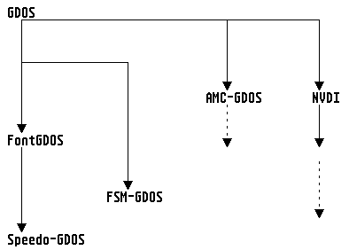
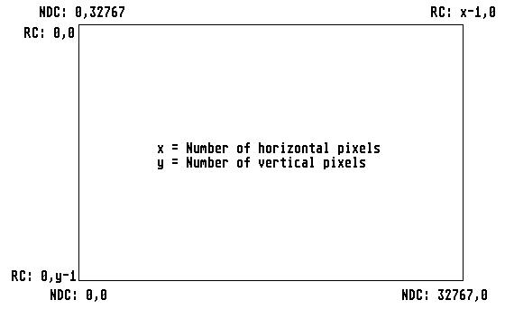
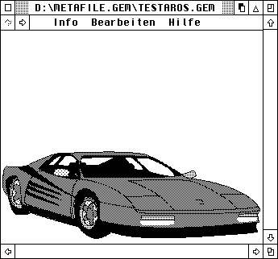
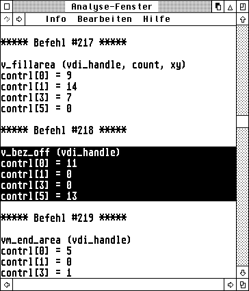
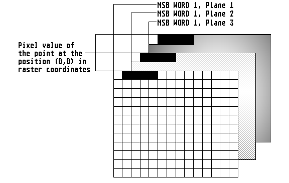

The VDI (Virtual Device Interface) forms the lower half of GEM; it is so to speak the basis of all AES functions.
Even if one normally regards the VDI primarily as providing functions for graphics output, its tasks also extend to inputs (such as with the mouse or graphics tablet, for instance). Hence the VDI is an operating system layer for addressing (in the widest sense) graphics- oriented output and input devices. This section describes the items:
As the word 'virtual' already indicates, nearly all function calls can be applied to any available output device (screen, printer, plotter, slide maker, imagesetter etc.). So it makes no difference whether one wants to draw circles or output text: this can be realized with the same operating system functions in each case.
The roots of the VDI lie in the CP/M-GSX system, which arose at the start of the eighties from the requirement for a portable graphics interface for the then-dominant CP/M systems. Similarities in the functions and designations to the GKS (Graphical Kern System) are hence by no means accidental but were fully intented by the Digital Research developers.
The VDI complies with the ANSI standard X3H3.6CG-VDI.
See also: Style guidelines
Clipping is a procedure that is really only made possible by the use of a windowed operating system. For this one uses a clipping rectangle which specifies to which part of the screen all graphic outputs of the relevant workstation are to be restricted; everything that protrudes outside the specified image section will be omitted in the screen output.
A low efficency but easily programmed window output routine would simply set one clipping rectangle for each partial rectangle of the window and then repeat all screen outputs required for building up the window contents. If you take the trouble to first make plausibi- lity checks whether the object to be drawn is actually going to be visible, you can naturally save a considerable amount of time.
Note: Like so much else in life, clipping too is not available for free. If you want to achieve optimum speed for screen build-ups, you should switch off the clipping rectangle as often as possible.
See also: VDI fundamentals Style guidelines vs_clip
Several functions of the VDI can only be used properly after the installation of a GDOS from the AUTO folder. Basically a GDOS (Graphics Device Operating System) allows the loading of various device drivers and fonts, and then to use them.
The GDOS itself is completely independent of the device used. Only the post-loaded drivers that realize the VDI functions on the correspon- ding device are device-specific. With detailed knowledge of the driver format it is possible to use any - even exotic - output devices as a VDI output device.
With resident GDOS the number of available VDI functions increases, while all other functions remain fully functional or contain extended output capabilities. However this is not the case the other way round, functions that require GDOS lead to a crash of the computer if GDOS is not resident.

Therefore it is important to know in some cases whether a complete GDOS is installed at all. Atari has documented the following procedure for this purpose: The trap-dispatcher alters the input value -2 for register d0 only when a GDOS is installed. Many compilers make the function vq_gdos available, which returns a value of 0 when no GDOS is installed. This functions is based essentially on the following code:
vq_gdos: move.w #-2,d0
trap #2
cmp.w #-2,d0
sne d0
ext.w d0
rts
Important note: vq_gdos only returns the information whether a GDOS is present, or not. Nothing is said about which GDOS is loaded or which capabilities the GDOS offers. So with the aid of this function it is not possible, for instance, to differentiate between AMC-GDOS and SpeedoGDOS or NVDI.
Attention: The GEM versions of the Dutch software house "ABC" (ABC-GEM 2.x) will crash at this call!
Alternatively there is also vq_vgdos (_vq_gdos):
vq_vgdos: move.w #-2,d0
trap #2
rts
As return one receives:
| Name | Value | GDOS Type |
| GDOS_NONE | -2 | GDOS not installed. |
| - | Any other value. | GDOS 1.0 or 1.2 |
| GDOS_ATARI | 0x0007E88A | GDOS 1.1 from Atari Corp. |
| GDOS_AMC | 0x0007E864 | AMC-GDOS from Arnd Beissner |
| GDOS_AMCLIGHT | 0x0007E8BA | GEMINI-special GDOS from Arnd Beissner |
| - | 0x3e5d0957 | ttf-gdos from Trevor Blight |
| GDOS_FNT | 0x5F464E54 ('_FNT') | FONTGDOS |
| GDOS_FSM | 0x5F46534D ('_FSM') | FSMGDOS |
| - | 0x66564449 ('fVDI') | fVDI |
The current (and more efficient) versions of GDOS are SpeedoGDOS and NVDI (as of Version 3.0), that, amid other things, permit handling vector fonts in TrueType, Type-1 or Speedo format. NVDI is also available in a special Macintosh version (NVDIMac), and permits any program that can ouput via GDOS (in conjunction with MagiC Mac) to make its output on Apple printers and in a network as well.
See also: ASSIGN.SYS file VDI fundamentals Style guidelines
The declaration of fonts and drivers in the ASSIGN.SYS file is made according to the following scheme:
<Device number> <Option> <Name of the driver> <Comment>
Example:
; ASSIGN.SYS file path = C:\gemsys 01p screen.sys ; Screen driver (ROM) monaco10.fnt ; Font (10 point) monaco12.fnt ; Font (12 point) monaco18.fnt ; Font (18 point) monaco24.fnt ; Font (24 point) 21r laserjet.sys ; HP Laserjet (resident) 22r necp.sys ; NEC Pinwriter (resident) 31 meta.sys ; Metafile drivers 81 t_office.sys ; Tele-Office
The variable path sets the directory in which drivers and fonts will be looked for by GDOS. Comments are always preceded by a semi- colon.
Under Option one can add a flag for each driver that specifies some further particulars; the following apply:
| Option | Meaning |
| 'p' | If NVDI is active, then the matching NVDI screen driver is loaded automatically; otherwise the driver of the Atari VDI that is present in ROM will be used |
| 'r' | The driver will be loaded on booting the system, and remains permanently in memory |
| 'r ' | The specified font will be loaded on booting the system, and remains resident in memory |
| 's ' | Incorporates the specified font as the system font.
Note: In this way the real system fonts may be replaced; the new font must have the same size and number of characters as the old font. |
Warning: If there is no letter after a device identifier, then the driver will be loaded on demand, and later removed from the system again. Only bitmap (pixel) fonts but no vector fonts can be declared in the ASSIGN.SYS file.
Incidentally, as of PC-GEM/3 the file ASSIGN.SYS no longer exists. There the drivers of the devices as well as fonts that are to be installed are simply copied to the folder \GEMAPPS\GEMSYS or to the folder \GEMAPPS\FONTS.
See also: GDOS drivers VDI fundamentals
A GDOS driver is essentially a normal program file without a startup code, which contains a dispatcher for the incoming VDI calls as a first routine. All drivers must be declared in the ASSIGN.SYS file that is evaluated by GDOS at the start.
The following list shows the most important drivers with their respective device numbers:
| Screen driver | (01-10) |
| Plotter driver | (11-20) |
| Printer driver | (21-30) |
| Metafile driver | (31-40) |
| Camera driver | (41-50) |
| Tablet driver | (51-60) |
| Memory driver | (61-70) |
| Fax driver | (81-90) |
| Bit-Image driver | (91-100) |
| Multimedia driver | (101-110) |
| Sound driver | (111-120) |
| Load and draw Bit-Image driver | (121-130) |
For implementing the dispatcher one should respect the following:
A GDOS driver always operates in a raster-coordinate system; the conversion of values in the ptsin and ptsout fields is taken on by the GDOS. In addition one should bear in mind that not all functions reach the actual driver in exactly the same form as they were sent, since they are partially pre-processed by the GDOS.
See also: GDOS VDI fundamentals Bindings of the VDI
The TOS screen driver can be replaced by a custom driver, which has to be post-loaded by the GDOS.
Such drivers exist already for various graphics cards (e.g. NVDI- ET4000 for graphics cards with the Tseng ET-4000 chip).
When acquiring an alternative screen driver, one should ensure that the driver supports all relevant functions of the VDI, and also has no problems with GEM fonts.
See also: GDOS drivers Minimum range of functions
The following list describes the range of functions that a screen driver should offer as a minimum; this comes from a specification from the Atari GEM Programmer's Guide.
With the aid of a bit-image driver, all applications that can output via GDOS can print directly to a file.
With NVDI drivers, one can set the page format and the name of the bit-image file for v_opnwk. The filename can also be passed with the help of vq_extnd:
contrl[1] = 4; ptsin[2] = 1157; ptsin[3..4] = Pointer to the filename (BYTE *); ptsin[5..6] = Pointer to the error variable (int16_t *); ptsin[7] = 0;
Note: One can certainly argue about the sense or nonsense of this feature, since vq_extnd is actually a pure information function!
See lso: GDOS drivers ASSIGN.SYS file
The selection of printer drivers for GDOS is at present almost inexhaustible; the only bottleneck seems to be for some colour printers.
When working with printer drivers one should note that not all drivers are completely identical functionally. So when using, say, a laser printer there are not only extra functions, but some of the existing ones may be partly extended as well.
For NVDI printer drivers one can set the page format and the GEMDOS output device for v_opnwk. For outputting (colour) images one should use the vrt_cpyfm or vro_cpyfm functions. They can be addressed in NVDI for printer drivers (and IMG, etc.) exactly like the functions of the screen driver. The only difference is that rasters cannot be moved within a printer bitmap (source and destination MFDB with fd_addr == 0L), as the printer bitmap generally consists of several slices that are handled sequentially. But this difference presents no restrictions, since copying within the device bitmap makes no sense for printer output!
If necessary, the printer driver buffers the bitmap in the display list should insufficient memory be available; there is therefore no need to hold the bitmap in memory with v_updwk until output.
If the bitmap has to be scaled, the program should not itself enlarge the bitmap if possible, but leave this work to vrt_cpyfm/vro_cpyfm. This improves the output quality, less data has to be buffered on the hard drive, and the printout is speeded up. Whether the driver is capable of scaling can be established with the vq_extnd call.
When outputting colour images in 8-colour mode, rasters should be treated before dithering with a correction function. Recommended is a gamma correction with an exponent of 0.3 to 0.4, so that the image does not appear completely dull and oversaturated. In TrueColor mode the driver performs colour correction, black separation and other quality improvements itself - bitmaps here should be sent without previous correction and without rasterising to the driver.
See also: GDOS drivers Bitmap format for printer drivers Minimum range of function
The following list describes the range of functions that a printer driver should offer as a minimum; this comes from a specification from the Atari GEM Programmer's Guide.
| Opcode | Subcode | Function |
| 1 | v_opnwk | |
| 2 | v_clswk | |
| 3 | v_clrwk | |
| 4 | v_updwk | |
| 5 | Escape functions: | |
| 1 | vq_chcells | |
| 20 | v_form_adv | |
| 21 | v_output_window | |
| 22 | v_clear_disp_list | |
| 23 | v_bit_image | |
| 6 | v_pline | |
| 7 | v_pmarker | |
| 8 | v_gtext | |
| 9 | v_fillarea | |
| 11 | Output functions: | |
| 1 | v_bar | |
| 2 | v_arc | |
| 3 | v_pieslice | |
| 4 | v_circle | |
| 5 | v_ellipse | |
| 6 | v_ellarc | |
| 7 | v_ellpie | |
| 8 | v_rbox | |
| 9 | v_rfbox | |
| 10 | v_justified | |
| 12 | vst_height | |
| 15 | vsl_type | |
| 17 | vsl_color | |
| 18 | vsm_type | |
| 20 | vsm_color | |
| 21 | vst_font | |
| 22 | vst_color | |
| 23 | vsf_interior | |
| 24 | vsf_style | |
| 25 | vsf_color | |
| 26 | vq_color | |
| 32 | vswr_mode | |
| 35 | vql_attributes | |
| 36 | vqm_attributes | |
| 37 | vqf_attributes | |
| 38 | vqt_attributes | |
| 39 | vst_alignment | |
| 102 | vq_extnd | |
| 104 | vsf_perimeter | |
| 106 | vst_effects | |
| 107 | vst_point | |
| 108 | vsl_ends | |
| 112 | vsf_udpat | |
| 116 | vqt_extent | |
| 117 | vqt_width | |
| 129 | vs_clip | |
| 130 | vqt_name | |
| 131 | vqt_fontinfo |
Just as for the screen, vq_scrninfo returns the format of the bitmap for printers as well. As a rule, there are only 3 different formats here:
As formats (1) and (3) will be self-explanatory, we only need to deal with format (2) here: For 8 colours, a coloured bitmap consists of 3 complete planes lying sequentially in memory. So the device-specific raster format corrresponds to the standard format. The allocation of the VDI colour index to pixel values follows the standard arrangement that applies to all VDI drivers.
See also: Printer drivers Raster formats vro_cpyfm vrt_cpyfm
A fax driver is, in principle, nothing more than a simple printer driver. With the help of such a driver, all applications that output via GDOS can send faxes directly.
For a fax driver one can specify neither a page format nor a GEMDOS device. One should also not attempt to alter the size of the bitmap.
See also: GDOS drivers ASSIGN.SYS file
As no drivers for graphics tablets exist at present, it is not possible to give further information here.
See also: GDOS drivers ASSIGN.SYS file
As no drivers for the Polaroid palette exist at present, it is not possible to give further information here.
See also: GDOS drivers Minimum range of functions
The following list describes the range of functions that a camera driver should offer as a minimum; this comes from a specification from Digital Research for PC-GEM 2.0:
| Opcode | Subcode | Function |
| 1 | v_opnwk | |
| 2 | v_clswk | |
| 3 | v_clrwk | |
| 4 | v_updwk | |
| 5 | Escape functions: | |
| 1 | vq_chcells | |
| 23 | v_bit_image | |
| 91 | vsp_film | |
| 92 | vqp_filmname | |
| 6 | v_pline | |
| 11 | Output functions: | |
| 1 | v_bar | |
| 2 | v_arc | |
| 3 | v_pieslice | |
| 4 | v_circle | |
| 5 | v_ellipse | |
| 6 | v_ellarc | |
| 7 | v_ellpie | |
| 8 | v_rbox | |
| 9 | v_rfbox | |
| 10 | v_justified | |
| 12 | vst_height | |
| 13 | vst_rotation | |
| 14 | vs_color | |
| 15 | vsl_type | |
| 16 | vsl_width | |
| 17 | vsl_color | |
| 18 | vsm_type | |
| 19 | vsm_height | |
| 20 | vsm_color | |
| 21 | vst_font | |
| 22 | vst_color | |
| 23 | vsf_interior | |
| 24 | vsf_style | |
| 25 | vsf_color | |
| 26 | vq_color | |
| 32 | vswr_mode | |
| 35 | vql_attributes | |
| 36 | vqm_attributes | |
| 37 | vqf_attributes | |
| 38 | vqt_attributes | |
| 39 | vst_alignment | |
| 102 | vq_extnd | |
| 104 | vsf_perimeter | |
| 106 | vst_effects | |
| 107 | vst_point | |
| 108 | vsl_ends | |
| 112 | vsf_udpat | |
| 113 | vsl_udsty | |
| 116 | vqt_extent | |
| 117 | vqt_width | |
| 119 | vst_load_fonts | |
| 120 | vst_unload_fonts | |
| 129 | vs_clip | |
| 130 | vqt_name | |
| 131 | vqt_fontinfo |
A memory driver is, in principle, a screen driver for which the output does not end up in the screen memory, but in another part of the memory, and which can then be processed further there.
The drivers available at present only support a monochrome bitmap, and have a logical resolution of 300dpi. Unfortunately the aspect ratio does not usually correspond to the current resolution of the screen, which has the result that circles, for instance, will be represented as ellipses.
The resolution of the bitmap may be set with v_opnwk, by writing the value 1 in ptsin[0..1] for width-1 or height-1 as well as in contrl[1]. After calling the function, the address of the bitmap is returned in contrl[0..1]. In addition it is also possible to set the bitmap size with vq_extnd. In that case it is also possible to pass a custom buffer; for this one sets contrl[3] to the value 3 and passes in intin[1..2] a pointer to the buffer.
Due to greater flexibility, one should give preference to off-screen bitmaps over memory drivers.
See also: GDOS drivers ASSIGN.SYS file
A metafile driver saves all calls directed to it in a GEM metafile which lies in the current directory of the application and has the name GEMFILE.GEM by default.
If one wishes to alter the name, then directly after v_opnwk call the function vm_filename, which can be passed a complete filename with the desired path and name.
So that other programs can depict a metafile sensibly, one should call the functions v_meta_extents, vm_pagesize and vm_coords.
See also:
v_meta_extents vm_pagesize vm_coords GDOS drivers Minimum range of functions
The following list describes the range of functions that a metafile driver should offer as a minimum; this comes from a specification from the Atari GEM Programmer's Guide.
| Opcode | Subcode | Function |
| 1 | v_opnwk | |
| 2 | v_clswk | |
| 3 | v_clrwk | |
| 4 | v_updwk | |
| 5 | Escape functions: | |
| 1 | vq_chcells | |
| 2 | v_exit_cur | |
| 3 | v_enter_cur | |
| 20 | v_form_adv | |
| 21 | v_output_window | |
| 22 | v_clear_disp_list | |
| 23 | v_bit_image | |
| 98 | v_meta_extents | |
| 99 | v_write_meta | |
| 100 | vm_filename | |
| 6 | v_pline | |
| 7 | v_pmarker | |
| 8 | v_gtext | |
| 9 | v_fillarea | |
| 11 | Output functions: | |
| 1 | v_bar | |
| 2 | v_arc | |
| 3 | v_pieslice | |
| 4 | v_circle | |
| 5 | v_ellipse | |
| 6 | v_ellarc | |
| 7 | v_ellpie | |
| 8 | v_rbox | |
| 9 | v_rfbox | |
| 10 | v_justified | |
| 12 | vst_height | |
| 13 | vst_rotation | |
| 14 | vs_color | |
| 15 | vsl_type | |
| 16 | vsl_width | |
| 17 | vsl_color | |
| 18 | vsm_type | |
| 19 | vsm_height | |
| 20 | vsm_color | |
| 21 | vst_font | |
| 22 | vst_color | |
| 23 | vsf_interior | |
| 24 | vsf_style | |
| 25 | vsf_color | |
| 26 | vq_color | |
| 32 | vswr_mode | |
| 35 | vql_attributes | |
| 36 | vqm_attributes | |
| 37 | vqf_attributes | |
| 38 | vqt_attributes | |
| 39 | vst_alignment | |
| 102 | vq_extnd | |
| 103 | v_contourfill | |
| 104 | vsf_perimeter | |
| 106 | vst_effects | |
| 107 | vst_point | |
| 108 | vsl_ends | |
| 112 | vsf_udpat | |
| 113 | vsl_udsty | |
| 114 | vr_recfl | |
| 117 | vqt_width | |
| 129 | vs_clip | |
| 131 | vqt_fontinfo |
After a long drought, GDOS plotter drivers too have become available. So, for instance, the program DATA is supplied with an HPGL driver, and also the PD disk number 458 of the magazine ST-Computer you will find such a driver.
More detailed information about plotter drivers is not available at present.
See also: GDOS drivers Minimum range of functions
The following list describes the range of functions that a plotter driver should offer as a minimum; this comes from a specification from the Atari GEM Programmer's Guide.
| Opcode | Subcode | Function |
| 1 | v_opnwk | |
| 2 | v_clswk | |
| 3 | v_clrwk | |
| 4 | v_updwk | |
| 5 | Escape functions: | |
| 1 | vq_chcells | |
| 6 | v_pline | |
| 7 | v_pmarker | |
| 8 | v_gtext | |
| 9 | v_fillarea | |
| 11 | Output functions: | |
| 1 | v_bar | |
| 2 | v_arc | |
| 3 | v_pieslice | |
| 4 | v_circle | |
| 5 | v_ellipse | |
| 6 | v_ellarc | |
| 7 | v_ellpie | |
| 8 | v_rbox | |
| 9 | v_rfbox | |
| 10 | v_justified | |
| 12 | vst_height | |
| 15 | vsl_type | |
| 17 | vsl_color | |
| 18 | vsm_type | |
| 20 | vsm_color | |
| 21 | vst_font | |
| 22 | vst_color | |
| 23 | vsf_interior | |
| 24 | vsf_style | |
| 25 | vsf_color | |
| 35 | vql_attributes | |
| 36 | vqm_attributes | |
| 37 | vqf_attributes | |
| 38 | vqt_attributes | |
| 39 | vst_alignment | |
| 102 | vq_extnd | |
| 104 | vsf_perimeter | |
| 107 | vst_point | |
| 108 | vsl_ends | |
| 116 | vqt_extent | |
| 117 | vqt_width | |
| 130 | vqt_name | |
| 131 | vqt_fontinfo |
The VDI distinguishes two different types of coordinate systems:
Raster coordinates (RC): When using this system one can
use the exact coordinate system native to the output device. For a
screen this corresponds to the available horizontal and vertical
pixels. The point of origin lies in the top left corner.
The main advantage of raster coordinates is the absolutely exact
positioning, which alone enables precise work with screen rasters
(windows etc).
Normalized coordinates (NDC): This system always has a
maximum resolution of 32768*32768 points. When a device driver is
called the VDI will automatically recalculate to the device's
physical coordinate system. The origin lies in the bottom left
corner. For working with the NDC system a GDOS has to have been
installed - the screen driver in ROM can not handle NDC
coordinates.
The following illustration makes the difference between RC and NDC coordinates particularly clear:

Note: In practice the NDC system is seldom used. Programs that have to offer exact dimensioning (desktop publishing, scientific graphics) must in any case use internally their own - finer - coordinate representation.
The use of the NDC system would mean that the coordinates would have to be converted twice (once from the internal representation in NDC coordinates, then to raster coordinates), which would lead to superfluous speed losses and rounding errors.
See also: VDI fundamentals Style guidelines
Metafiles are nothing more than saved VDI commands, which are used in object-oriented programs such as GEMDRAW or Kandinsky. The main purpose here is a standardized data exchange between different GEM applications. A metafile starts with a header that describes the charactersitics of the graphic contained in it, and is constructed as follows:
typedef struct
{
int16_t id; /* Always has the value 0xffff */
int16_t headlen; /* Length of the header */
int16_t version; /* Version number */
int16_t transform; /* NDC or RC coordinate system */
int16_t extents[4]; /* Max. size of the graphic (optional) */
int16_t pagesize[2]; /* Page size in 1/10 mm (optional) */
int16_t coords[4]; /* Coordinate system (optional) */
int16_t bit_image; /* Bit-image present (1) or not (0) */
int16_t reserved[9]; /* Reserved */
} META_HEADER;
Note: The component bit_image of the header specifies whether a bit- image file is present in the metafile file. Actually no metafile contains a pixel graphic; if, for instance, one draws in GEMPAINT an image named 'test', then the program creates besides a file 'test.img' another file 'test.gem'; the latter contains just one VDI command (v_bit_image), and the component bit_image then has the value 1.
When reading a metafile, no fixed length is used; instead, an appli- cation first reads the two first words (and with that the length) of the header. Subsequently the rest of the header is read. This is followed by any number of entries in the form:
| Word | Contents | Assignment |
| 0 | contrl[0] | VDI command number |
| 1 | contrl[1] | Number of values in ptsin |
| 2 | contrl[3] | Number of values in intin |
| 3 | contrl[5] | Subfunction number |
| from 4 | ptsin[] | Allocation of the ptsin field |
| then | intin[] | Allocation of the intin field |
The end of a metafile is indicated by the value -1 (for contrl[0]).
Important: Metafiles are always stored in the Intel format (low-high). Hence to handle metafiles on a 680X0 system, the lower- and higher- valued byte have to be swapped for each word as it is read.
With the component pagesize one can obtain data about page-width and height. If one wants to create metafiles, then these two values should be assigned standard sizes. The following standard sizes are supported by most GEM programs:
| Label | Inch | Centimeter |
| Letter | 8,50 * 11,00 | 21,59 * 27,94 |
| Legal | 8,50 * 14,00 | 21,59 * 35,56 |
| Half | 8,50 * 5,50 | 21,59 * 13,97 |
| Ledger | 11,00 * 17,00 | 27,94 * 43,18 |
| DIN A3 | 11,69 * 16,54 | 29,70 * 42,00 |
| DIN A4 | 8,07 * 11,69 | 21,00 * 29,70 |
| DIN A5 | 5,85 * 8,27 | 14,80 * 21,00 |
| DIN B5 | 7,17 * 9,84 | 18,20 * 25,00 |
| Wide | 14,00 * 11,00 | 35,56 * 27,94 |
The values for pagesize[0] (width) and pagesize[1] (height) result from the centimeter values multiplied by 100.
See also:
Metafile drivers Metafile functions Sub-opcodes XIMG format OUT file format
The GEM metafile format can be extended by user-defined sub-opcodes to almost any extent without giving rise to incompatibilities. One should merely pay attention to the following two points:
As the numbers from 0 to 100 are reserved for the operating
system, only sub-opcodes numbers from 101 on are available.
Each developer should make sure that any opcode planned by him
is not already in use elsewhere, to ensure frictionless data
exchanges.
The following list contains a description of the opcodes defined and known at present:
| Code Name | Description | ||||||||||||||||||||||||||||
| 10 GEM_START_GROUP | Defines the start of a group, i.e. of a set of associated objects | ||||||||||||||||||||||||||||
| 11 GEM_END_GROUP | Marks the end of a group, i.e. of a set of associated objects | ||||||||||||||||||||||||||||
| 32 GEM_BEZ_QUAL | See v_bez_qual | ||||||||||||||||||||||||||||
| 34 ??? | No information available at present | ||||||||||||||||||||||||||||
| 49 GEM_NO_LINE_STYLE | Any kind of line style should be switched off | ||||||||||||||||||||||||||||
| 50 GEM_START_SHADOW | Says that the following VDI commands up to GEM_END_SHADOW should be used to draw a shadow for the first object after GEM_END_SHADOW | ||||||||||||||||||||||||||||
| 51 GEM_END_SHADOW | Marks the end of a sequence of commands that are used for drawing an object shadow, and are introduced by GEM_START_SHADOW | ||||||||||||||||||||||||||||
| 80 GEM_START_FILL | |||||||||||||||||||||||||||||
| 81 GEM_END_FILL | All commands lying between these two codes are used to draw a
filled area with or without a surround
Example: Stepwise drawing of a polygon area with shadow and surround:
| ||||||||||||||||||||||||||||
| 101 VM_VER_APP | Gives information about the name and the version number of an
application that created a metafile; the following apply:
Note: The name of the application should always be given without the suffix, as this can be different on various GEM systems | ||||||||||||||||||||||||||||
| 102 GEM_COLOR | No information available at present | ||||||||||||||||||||||||||||
| 103 ??? | No information available at present | ||||||||||||||||||||||||||||
| 107 ??? | No information available at present | ||||||||||||||||||||||||||||
| 111 ??? | No information available at present | ||||||||||||||||||||||||||||
| 170 GEM_START_BGIF | Starts text output with a BGI vector font; the following apply:
Up to GEM_END_BGIF follow the v_pline commands that are required for depicting the text if a program cannot interpret these sub-opcodes. | ||||||||||||||||||||||||||||
| 171 GEM_END_BGIF | Marks the end of text output with a BGI vector font | ||||||||||||||||||||||||||||
| 190 GEM_WIND | Sets the position, zoom step and format of a window; the
following apply:
| ||||||||||||||||||||||||||||
| 191 GEM_GRID | Permits permanent saving of raster settings of a window; the
following apply:
| ||||||||||||||||||||||||||||
| 192 GEM_ALIGN | Describes the reference object; the following apply:
| ||||||||||||||||||||||||||||
| 193 GEM_START_GREY | Specifies a grey-tone as fill area; shades in the region of
0..255 (white..black) are possible for this. The following apply:
The following commands up to GEM_END_GREY set a user-defined pattern with the corresponding grey-tone; they only serve for programs that can't cope with these opcodes. | ||||||||||||||||||||||||||||
| 194 GEM_END_GREY | Marks the end of a user-defined grey-tone pattern | ||||||||||||||||||||||||||||
| 195 GEM_START_BEZIER | Defines a Bezier stroke; the following apply:
Up to GEM_END_BEZIER then follow v_pline calls which draw an equivalent polygon strokes for programs that do not understand the sub-opcode | ||||||||||||||||||||||||||||
| 196 GEM_END_BEZIER | Marks the end of a Bezier stroke | ||||||||||||||||||||||||||||
| 197 GEM_START_JOIN | Permits the saving of more coordinates than the metafile driver
allows. If an application finds this sub-opcode, then the ptsin
fields of the following VDI blocks up to GEM_END_JOIN will be
collected up in a large field. The following apply:
| ||||||||||||||||||||||||||||
| 198 GEM_END_JOIN | Marks the end of a section defined by GEM_START_JOIN. | ||||||||||||||||||||||||||||
| 199 ??? | No information available at present | ||||||||||||||||||||||||||||
| 201 ??? | No information available at present | ||||||||||||||||||||||||||||
| 203 ??? | No information available at present | ||||||||||||||||||||||||||||
| 230 ??? | No information available at present |
Note: When reading a metafile it is imperative that a program should ignore unknown statements.
See also: v_write_meta Sample binding Analysis of a metafile
For understanding of the metafile format it can be useful to view the contents of a metafile as plain text. The tools required for this can be found in many mailboxes of the Mausnet.

Example: The illustration above shows a window of the graphics software GEM-Look, containing a vector graphic in metafile format.
The software permits, amongst other things, to have the contents of a GEM metafile displayed in plain text, and even to work through this in any desired steps.
In addition one can specify via a dialog exactly which information is to be paid regard to for the analysis, or to be output, and in what format the output should appear.

The plain text information will be displayed in a window, and can be (fully or partly) transferred to other programs via the clipboard.
Due to the fact that all commands of the output window can also be executed individually and in any desired order, it is very easy to reproduce the commands saved in a metafile.
See also:
Sample analysis Metafile format Metafile sub-opcodes
/* The following code fragment permits the storing in a metafile the
name and the version number of the application that has created a
metafile... */
GLOBAL void vm_ver_app( int16_t vdi_handle, int16_t version,
uint8_t *app_name)
{
int16_t i;
contrl[0] = 5;
contrl[1] = 0;
contrl[3] = 2 + strlen (app_name);
contrl[5] = 99; /* v_write_meta */
contrl[6] = vdi_handle;
intin[0] = VM_VER_APP;
intin[1] = version;
i = 2;
while ((intin [i++] = (int16_t) (uint8_t)*app_name++) != 0)
;
vdi ();
} /* vm_ver_app */
See also: VDI bindings Metafile format
// This analysis was created by GEM-Look, the program for the
// depiction and analysis of graphics in XIMG and metafile formats;
// (c) 1994-1995 by Rolf Kotzian.
//
// It is not permitted to distribute parts of this analysis without
// this header
Analysis of: E:\C\GEISS\EXAMPLES\GEM_IMG\BEZIER.GEM
Metafile ID : -1
Length of the header : 24
GEM-Version : 3.10
NDC/RC Flag : RC
Ausmaß minimales x : -2720 (Minimum dimension X)
Ausmaß minimales y : -2136 (Minimum dimension Y)
Ausmaß maximales x : 2112 (Maximum dimension X)
Ausmaß maximales y : 1592 (Maximum dimension Y)
Seiten-Breite : 14.80 cm (Page width)
Seiten-Höhe : 21.00 cm (Page height)
Koord.System linkes x : -3495 (Coordinate system left X)
Koord.System linkes y : 4960 (Coordinate system left Y)
Koord.System rechtes x : 3495 (Coordinate system right X)
Koord.System rechtes y : -4960 (Coordinate system right Y)
Bit-Image vorhanden? : nein (Bit-image present? : No)
***** Befehl #1 ***** (Command #1)
vswr_mode (vdi_handle, mode)
contrl[0] = 32
contrl[1] = 0
contrl[3] = 1
contrl[5] = 100
intin[0] = 1
***** Befehl #2 ***** (Command #2)
vsl_type (vdi_handle, style)
contrl[0] = 15
contrl[1] = 0
contrl[3] = 1
contrl[5] = 100
intin[0] = 1
***** Befehl #3 ***** (Command #3)
vsl_width (vdi_handle, width)
contrl[0] = 16
contrl[1] = 1
contrl[3] = 0
contrl[5] = 100
ptsin[0] = x = 1
ptsin[1] = y = 1
***** Befehl #4 ***** (Command #4)
vsl_color (vdi_handle, index)
contrl[0] = 17
contrl[1] = 0
contrl[3] = 1
contrl[5] = 100
intin[0] = 1
***** Befehl #5 ***** (Command #5)
vsl_ends (vdi_handle, beg_style, end_style)
contrl[0] = 108
contrl[1] = 0
contrl[3] = 2
contrl[5] = 100
intin[0] = 0
intin[1] = 0
***** Befehl #6 ***** (Command #6)
vsm_type (vdi_handle, symbol)
contrl[0] = 18
contrl[1] = 0
contrl[3] = 1
contrl[5] = 100
intin[0] = 1
***** Befehl #7 ***** (Command #7)
vsm_height (vdi_handle, height)
contrl[0] = 19
contrl[1] = 1
contrl[3] = 0
contrl[5] = 100
ptsin[0] = x = 1
ptsin[1] = y = 1
***** Befehl #8 ***** (Command #8)
vsm_color (vdi_handle, index)
contrl[0] = 20
contrl[1] = 0
contrl[3] = 1
contrl[5] = 100
intin[0] = 1
***** Befehl #9 ***** (Command #9)
vst_rotation (vdi_handle, angle)
contrl[0] = 13
contrl[1] = 0
contrl[3] = 1
contrl[5] = 100
intin[0] = 0
***** Befehl #10 ***** (Command #10)
vst_font (vdi_handle, font)
contrl[0] = 21
contrl[1] = 0
contrl[3] = 1
contrl[5] = 100
intin[0] = 1
***** Befehl #11 ***** (Command #11)
vst_color (vdi_handle, index)
contrl[0] = 22
contrl[1] = 0
contrl[3] = 1
contrl[5] = 100
intin[0] = 1
***** Befehl #12 ***** (Command #12)
vst_alignment (vdi_handle, hor_in, vert_in, hor_out, vert_out)
contrl[0] = 39
contrl[1] = 0
contrl[3] = 2
contrl[5] = 100
intin[0] = 0
intin[1] = 0
***** Befehl #13 ***** (Command #13)
vst_effects (vdi_handle, effect)
contrl[0] = 106
contrl[1] = 0
contrl[3] = 1
contrl[5] = 100
intin[0] = 0
***** Befehl #14 ***** (Command #14)
vst_point (vdi_handle, point, char_width, char_height, cell_width,
cell_height)
contrl[0] = 107
contrl[1] = 0
contrl[3] = 1
contrl[5] = 100
intin[0] = 12
***** Befehl #15 ***** (Command #15)
vsf_interior (vdi_handle, style)
contrl[0] = 23
contrl[1] = 0
contrl[3] = 1
contrl[5] = 100
intin[0] = 1
***** Befehl #16 ***** (Command #16)
vsf_style (vdi_handle, index)
contrl[0] = 24
contrl[1] = 0
contrl[3] = 1
contrl[5] = 100
intin[0] = 1
***** Befehl #17 ***** (Command #17)
vsf_color (vdi_handle, index)
contrl[0] = 25
contrl[1] = 0
contrl[3] = 1
contrl[5] = 100
intin[0] = 1
***** Befehl #18 ***** (Command #18)
vsf_perimeter (vdi_handle, per_vis)
contrl[0] = 104
contrl[1] = 0
contrl[3] = 1
contrl[5] = 100
intin[0] = 1
***** Befehl #19 ***** (Command #19)
v_write_meta (vdi_handle, num_ints, ints, num_pts, pts)
contrl[0] = 5
contrl[1] = 0
contrl[3] = 7
contrl[5] = 99
intin[0] = 34
intin[1] = 3
intin[2] = 1
intin[3] = 42
intin[4] = 42
intin[5] = 42
intin[6] = 42
***** Befehl #20 ***** (Command #20)
v_bez_on (vdi_handle)
contrl[0] = 11
contrl[1] = 1
contrl[3] = 0
contrl[5] = 13
***** Befehl #21 ***** (Command #21)
vsf_perimeter (vdi_handle, per_vis)
contrl[0] = 104
contrl[1] = 0
contrl[3] = 2
contrl[5] = 13
intin[0] = 1
intin[1] = 1
***** Befehl #22 ***** (Command #22)
vsf_color (vdi_handle, index)
contrl[0] = 25
contrl[1] = 0
contrl[3] = 1
contrl[5] = 13
intin[0] = 2
***** Befehl #23 ***** (Command #23)
vsf_interior (vdi_handle, style)
contrl[0] = 23
contrl[1] = 0
contrl[3] = 1
contrl[5] = 13
intin[0] = 0
***** Befehl #24 ***** (Command #24)
vsf_style (vdi_handle, index)
contrl[0] = 24
contrl[1] = 0
contrl[3] = 1
contrl[5] = 13
intin[0] = 0
***** Befehl #25 ***** (Command #25)
vsl_color (vdi_handle, index)
contrl[0] = 17
contrl[1] = 0
contrl[3] = 1
contrl[5] = 13
intin[0] = 3
***** Befehl #26 ***** (Command #26)
vsl_width (vdi_handle, width)
contrl[0] = 16
contrl[1] = 1
contrl[3] = 0
contrl[5] = 13
ptsin[0] = x = 1
ptsin[1] = y = 0
***** Befehl #27 ***** (Command #27)
vsf_perimeter (vdi_handle, per_vis)
contrl[0] = 104
contrl[1] = 0
contrl[3] = 2
contrl[5] = 13
intin[0] = 1
intin[1] = 1
***** Befehl #28 ***** (Command #28)
vsl_ends (vdi_handle, beg_style, end_style)
contrl[0] = 108
contrl[1] = 0
contrl[3] = 2
contrl[5] = 13
intin[0] = 0
intin[1] = 0
***** Befehl #29 ***** (Command #29)
v_bez (vdi_handle, count, xyarr, bezarr, minmax, npts, nmove)
contrl[0] = 6
contrl[1] = 17
contrl[3] = 9
contrl[5] = 13
ptsin[0] = x = -2125
ptsin[1] = y = 100
ptsin[2] = x = -708
ptsin[3] = y = -441
ptsin[4] = x = 237
ptsin[5] = y = 640
ptsin[6] = x = 1654
ptsin[7] = y = -981
ptsin[8] = x = 237
ptsin[9] = y = 640
ptsin[10] = x = -1180
ptsin[11] = y = 2261
ptsin[12] = x = 2127
ptsin[13] = y = 1723
ptsin[14] = x = 2127
ptsin[15] = y = 100
ptsin[16] = x = 2127
ptsin[17] = y = -1522
ptsin[18] = x = -708
ptsin[19] = y = 100
ptsin[20] = x = 237
ptsin[21] = y = -981
ptsin[22] = x = 1182
ptsin[23] = y = -2062
ptsin[24] = x = -2124
ptsin[25] = y = -2601
ptsin[26] = x = -2597
ptsin[27] = y = -1522
ptsin[28] = x = -3070
ptsin[29] = y = -441
ptsin[30] = x = -1653
ptsin[31] = y = -440
ptsin[32] = x = -2125
ptsin[33] = y = 100
intin[0] = 2344
intin[1] = 4112
intin[2] = 4105
intin[3] = 2320
intin[4] = 4112
intin[5] = 4105
intin[6] = 2320
intin[7] = 4112
intin[8] = 12
***** Befehl #30 ***** (Command #30)
v_bez_off (vdi_handle)
contrl[0] = 11
contrl[1] = 0
contrl[3] = 0
contrl[5] = 13
***** Befehl #31 ***** (Command #31)
vsf_perimeter (vdi_handle, per_vis)
contrl[0] = 104
contrl[1] = 0
contrl[3] = 2
contrl[5] = 13
intin[0] = 0
intin[1] = 0
// Ende der Analyse
// GEM-Look, (c) 1994/95 by Rolf Kotzian
See also: Analysis of a metafile VDI bindings
The version number depends on which GEM system was used to produce the metafile; it is described by the formula:
100 * main version number + sub-version number.
Example: The value 301 represents Version 3.1
NVDI (NewVDI) is a VDI developed by the Behne brothers which completely replaces the original from Atari. Apart from its very high speed, it offers the possibility of using vector fonts in the Speedo, and TrueType format (with a special module also Type-1). NVDI is also available in a special Macintosh version (NVDIMac), and enables any program that can output via GDOS (in connection with MagiC Mac) to also output on Apple printers and in networks.
To establish which NVDI version one is using and what function range it offers one has to look for the NVDI cookie 'NVDI', which contains the version number in BCD format (e.g. 0x0410 for Version 4.10).
If you want to use off-screen bitmaps, you should look for the 'EdDI' cookie (e.g. with is_EdDI). The LONGword following the ID is the address of a dispatcher, which is called up with the function number in register d0.w. Pure-C conventions apply for the call, i.e. the registers d0-d2/a0-a1 and the stack are used for parameter passing, d0-d2/a0-a1 can be altered. The function 0 returns the EdDI version number in BCD format (e.g. 0x0110 for Version 1.10).
See also:
Off-screen bitmaps v_opnbm v_clsbm VDI fundamentals
vq_scrninfo GEM
Sample code for Pure-C:
GLOBAL BOOLEAN is_EdDI ()
{
int16_t (*func)(int16_t);
if (get_cookie ("EdDI", (LONG *) &func))
return ((*func)(0));
else return (FALSE);
} /* is_EdDI */
It can be very useful for many applications if drawing functions can be applied not directly to the screen, but to an invisible screen. Such a "hidden" screen is called an off-screen bitmap.
For creation of off-screen bitmaps one uses the function v_opnbm. This can have either the size of a bitmap specified that it is to allocate, or it can be passed a bitmap. The bitmap is managed in the same format as that of the screen, which makes fast copying between the two possible. The function v_clsbm closes a bitmap created with v_opnbm, and frees its memory if necessary.
Raster operations between screen and off-screen bitmap should be made basically in a device-specific format. If the destination of a raster operation is specified as an off-screen bitmap with its MFDB and if the handle belonging to this bitmap is used, then during blitting the bitmap will be clipped according to the coordinates set via vs_clip on this workstation. So for copying a raster from the screen to an off-screen bitmap one should use the vdi_handle of this bitmap.
If, on the other hand, the bitmap is the source and the screen the destination, then one should use the handle of the screen workstation, as in that case the raster will be clipped according to the screen coordinates. If one uses the handle of a bitmap returned by v_opnbm, and fd_addr of a MFDB contains 0, then the data of the bitmap will be used instead.
See also: NVDI GDOS Style guidelines
The OUT format was developed by Digital Research and, like the XIMG or metafile format permits data exchange between any GEM applications. More exactly, it permits control characters for text attributes to be written to a file with the suffix ".out", which are then recognized and taken into account by the output driver.
This makes the OUT format particularly well suited for exchanging text files with attributes between various applications. OUT files are nothing more than ASCII files, which use the control code DC2 (ASCII value 18) for switching between text attributes; this is followed by a letter that describes the switching on or off of the attribute:
Following control characters are defined:
| Code | Meaning |
| DC2 0 | Bold on |
| DC2 1 | Bold off |
| DC2 2 | Italic on |
| DC2 3 | Italic off |
| DC2 4 | Underlined on |
| DC2 5 | Underlined off |
| DC2 6 | Superscript on |
| DC2 7 | Superscript off |
| DC2 8 | Subscript on |
| DC2 9 | Subscript off |
| DC2 A | NLQ mode on |
| DC2 B | NLQ mode off |
| DC2 C | Expanded on |
| DC2 D | Expanded off |
| DC2 E | Light on |
| DC2 F | Light off |
| DC2 G | |
| : | |
| : | |
| DC2 V | Reserved, is ignored |
| DC2 W | Pica font (10 cpi) |
| DC2 X | Elite font (12 cpi) |
| DC2 Y | Condensed print |
| DC2 Z | Proportional print |
Note: Naturally one can also incorporate graphics in the output file; the syntax in this case runs:
(ESC)(ESC)GEM,x,y,w,h,C:\pathname\filename.img
The parameters x,y,w and h here are to be specified in character units relative to the current cursor position.
See also: GDOS drivers v_alpha_text XIMG format Metafile format
For working with screens the raster functions play a special role; they are responsible for everything that has to do with movement or changes of screen clipping. Example: Scrolling within a document or the depiction of icons.
Naturally, the raster functions can only perform their tasks efficien- tly if the same format is used for internal depiction as that used in video memory; otherwise the data would have to be converted for each individual call of a raster function. However, the internal structure of the video memory depends on the hardware of the graphics system in use - quite apart from the fact that the video memory need not necessarily be directly accessible to the processor.
The number of bits per pixel required depends, naturally, on the number of colours that can be displayed simultaneously; for monochrome pixels 1 bit is sufficient, for 16 colours one already needs 4 bits. Depending on the video hardware in use, these bits can, of course, be arranged in completely different ways; one should not be surprised, therefore, that various formats are available for this purpose:
Pixel-oriented format: In this case, all bits belonging to a pixel are coded together in one or more bytes. In a system using 16 colours, therefore, two pixels would be saved together in one byte in each case; for 256 colours, each pixel occupies one byte.
Plane-oriented format: In this case one treats the video memory as a collections of monochrome (i.e. single-coloured) image planes. To obtain the colour of a pixel, one combines the relevant bits from the individual planes to a colour value. This says nothing, of course, about how the individual planes are arranged in the video memory. A simple solution (common in the PC domain) is to store one plane after the other (sequentially) in video memory.
So as not to be restricted to a given, hardware-dependent format, the VDI differentiates between the device-depedent format (which depends on the hardware), and the so-called standard format. The standard format is the same for all VDI systems, and can therefore be used any time one wants to import raster graphics from outside into the system (example: depiction of icons in a resource file). For conversion between the two fomats one can make use of the vr_trnfm function.
The VDI standard format is defined as follows:
The format is plane-oriented. Each image plane occupies a
contiguous block of memory, and has the same number of image points.
The highest bit of a 16-bit WORD represents the furthest left
pixel
Sequential words in video memory form the individual lines. The
first WORD of such a line lies at the left image border; the first
line of the plane codes the topmost pixel line.
The following figure shows an example for the device-independent standard format with 3 colour planes, where each small square represents a pixel:

Warning: In the monochrome graphics modes of the ST and TT030, the device-dependent format happens to (!) correspond to the device- independent one (i.e. the standard format). This does not mean, of course, that one may therefore dispense with the use of the vr_trnfm function. As one normally has no information about the device-specific format, this reason alone forbids any direct manipulation of the video memory.
As a matter of principle, the VDI works in a colour register oriented (colour lookup table or CLUT) manner. It starts off by assuming that there is a maximum number of colours that may be displayed simulta- neously, and that one can assign to these colour registers a palette of certain (relatively freely selectable) tints. As this feature is by no means self-evident, it can be inquired for via vq_extnd. There follow two examples for graphics modes without a colour lookup table:
The TT030 graphic mode 'TT-high': there are only two colour
registers and two tints (black and white), which may also not be
swapped.
With True-Color graphics cards such as the Crazy-Dots-II, an
'arbitrary' number of colours may be displayed simultaneously.
Normally 24 bits per pixel are used for this, so that some 16 million
colours are available. With such a large number of colours the idea of
colour registers is out of the question: The number of tints
principally displayable simultaneously far exceeds the typical number
of image points.
There remains the question how the pixel values in video memory are related to the VDI colour indices. Answer:
| (a) | On historical grounds, the start point is that for a pixel in
the VDI colour 0 (normally white) all bits are cleared, and for
black image points (VDI colour 1) all bits are set. This is logical
if only for the reason that by completely inverting all bits of the
pixel display, white and black are swapped.
|
| (b) | With the aid of the v_get_pixel function one can obtain both
the VDI colour index as well as the pixel value for a given image
coordinate.
|
In addition, Atari and Digital Research have documented the standard assignments for 4, 8 and 16 colour palettes:
For four colours, the following apply:
| Pixel value | Colour index | Colour | Name |
| 00 | 0 | White | WHITE |
| 01 | 2 | Red | RED |
| 10 | 3 | Green | GREEN |
| 11 | 1 | Black | BLACK |
For eight colours the following apply:
| Pixel value | Colour index | Colour | Name |
| 000 | 0 | White | WHITE |
| 001 | 2 | Red | RED |
| 010 | 3 | Green | GREEN |
| 011 | 6 | Yellow | YELLOW |
| 100 | 4 | Blue | BLUE |
| 101 | 7 | Magenta | MAGENTA |
| 110 | 5 | Cyan | CYAN |
| 111 | 1 | Black | BLACK |
For 16 colours, the following apply:
| Pixel value | Colour index | Colour | Name |
| 0000 | 0 | White | WHITE |
| 0001 | 2 | Red | RED |
| 0010 | 3 | Green | GREEN |
| 0011 | 6 | Yellow | YELLOW |
| 0100 | 4 | Blue | BLUE |
| 0101 | 7 | Magenta | MAGENTA |
| 0110 | 5 | Cyan | CYAN |
| 0111 | 8 | Light grey | LWHITE |
| 1000 | 9 | Dark grey | LBLACK |
| 1001 | 10 | Light red | LRED |
| 1010 | 11 | Light green | LGREEN |
| 1011 | 14 | Light Yellow | LYELLOW |
| 1100 | 12 | Light Blue | LBLUE |
| 1101 | 15 | Light Magenta | LMAGENTA |
| 1110 | 13 | Light Cyan | LCYAN |
| 1111 | 1 | Black | BLACK |
Note: For other colour depths, no unambiguous assignments exist. As there is also no general formula for a conversion, one has to resort to the function v_get_pixel when necessary.
See also: AES object colours Raster functions vq_scrninfo
SpeedoGDOS belongs to the youngest generation of the GDOS family, and is currently available in Version 5.0c. Besides the features of a 'normal' GDOS, it excels with the following possibilities:
To check whether SpeedoGDOS is installed it is best to inquire via the cookie jar. The program installs a cookie with the ID 'FSMC' in the boot phase.
See also: GDOS NVDI Style guidelines
When using the programs NVDI or SpeedoGDOS, high quality vector fonts (in the formats Speedo, TrueType, and Type-1) are available also under GEM. As in supporting these font technologies some subtleties have to be taken note of, the following points are dealt with in this section:
See also: vst_load_fonts vst_unload_fonts
Some applications can only run with monospaced fonts or they can run faster when they recognize that a font is monospaced. The appropriate proceeding is the following one:
If an extended version of vqt_name exists (35 entries in
intout), you should check the monospace-bit in intout[34].
If vqt_name only offers the information that it refers to a
vector font (34 entries in intout, intout[33] != 0), then for vector
fonts one should call vqt_fontheader, and check bit 1 of FH_CLFGS.
If the font is not a vector font and the first two points above
do not apply, the character widths have to be obtained individu- ally
with vqt_width and one should compare the character widths.
If you use v_ftext to display characters of a monospaced vector font, the width of the string can not be calculated with the return values of vqt_width or vst_height but width vqt_advance32, because characters of a vector font can have fractional widths - even if the font is monospaced - and v_ftext uses these fractional width to place the characters.
See also: Vector fonts About the VDI GDOS Style guidelines fix31
The index of a font is a number between 1 and the number of available fonts. Depending on the number of installed fonts, a font like "Swiss 721" has a different index (supposing that Swiss 721 is one of the installed fonts).
The Font ID of a font is a fix number which is (with a few exceptions) not depending on the number of installed fonts or the used system - e.g. the id of "Swiss 721" is always 5003.
Of course there are exceptions from this rule: Some TrueType and Type 1 fonts do not have an id. In this case will try zo creates a unique id based on the name. This id can depend on the ids of the other installed fonts and therefore the same font might have another id on another computer with other fonts. To avoid problems like selecting the wrong font and to facilitate replacing not existing fonts, you should save the id and the name of a font.
See also: Vector fonts About the VDI GDOS Style guidelines
Most screen drivers return a resolution of ≈ 91 dpi, which also determines the size of vector fonts on-screen. As not every screen works at 91 dpi, programs when displaying text should not assume this fixed value, but instead respect the output of v_opnwk, v_opnvwk, vq_extnd and v_opnbm.
Otherwise, if the pixel sizes differ, display errors may occur. For printouts the more exact pixel sizes of vq_extnd should be used, so.
You can set the height and the width of a vector font with the functions vst_arbpt32 and vst_setsize32 in 1/65536 pt (1 pt ≈ 1/72" ≈ 353µm).
If the specified width or height is negative, the text is mirrored on the corresponding axis.
Kerning is a process for manipulating spacing between characters to achieve a more consistent (better) appearance of the typeface. One can differentiate between two variants of kerning:
Track kerning: This method uses a constant
offset for all characters of a font. Fonts that support track
kerning normally include several offsets so that one can choose
normal, tight or very tight kerning, for instance.
Pair kerning: This is based on the realisation that
one offset makes little sense for all characters of a font,
because in many cases one can obtain an appreciably better appearance
of the set type if the spacing for each pair of characters can be
set individually. Fonts that support pair kernning therefore
contain a table in which the optimum offset for each combination of
(more exactly: for the most important) character pairs are noted.
Note: Both track as well as pair kerning are switched off after the opening of a workstation. So to achieve better text depiction one should switch on pair kerning with vst_kern.
See also: vst_kern vqt_pairkern vqt_trackkern vst_track_offset
When outputting vector fonts the VDI works internally with resolution steps of 1/65536 of a pixel, to ensure precise character positioning irrespective of the output device used and its actual resolution.
To output the bitmaps for individual characters, these fixed-point values are converted to pixels by adding 32768 and then dividing by 65536.
When track kerning is switched on, an offset that is obtained
from vqt_trackkern is added to each character position.
When pair kerning is switched on, an offset that is returned by
vqt_pairkern is added to each character position.
Warning: Pair/track kerning and the positioning in 1/65536 of a pixel will only be applied if v_ftext is called! With v_gtext, vector fonts behave mostly like bitmap fonts and neither kerning nor exact positio- ning are used.
See also: Pair kerning Track kerning fix31 format
If the set font is a vector font, then vqt_name returns 34 entries in intout and intout[33] contains a non-zero value.
If, instead, intout[33] is zero (or if only 33 entries are returned), then we are dealing with a bitmap font.
A workstation is a general term for an input or output device; this can be a screen, a printer, a plotter, a camera, a graphics tablet or one of many other devices.
In order to be able to access a given VDI device one must therefore first open the workstation. Depending on the state of affairs, one will have returned either an error-message or the workstation ID (handle) of the relevant device.
A set of features belong to each workstation, which are unalterable and give information about the capabilities of the device. These include, amongst others, device type, coordinate system and colour capability. Besides the data returned on opening the workstation, an extended inquiry function permits obtaining further data about a device. This allows applications to take optimum advantage of the device capabilities (for instance by adapting their screen structure to the number of displayable screen pixels).
In addition to the unalterable features of a workstation, there also some that can be changed; one speaks here about attributes, which describe the current state of the device. A good example is the line colour, which only has to be set once (and not perhaps for each individual call of drawing functions). The current attributes are saved by the VDI in internal structures separately for each individual workstation; thus an application can easily set different line colours for the screen and the printer, for instance. The VDI recognizes from the workstation handle which output device is meant.
The following table shows some attributes with their standard values:
| Attribute | Standard value | Set by |
| Baseline angle | 0 degrees | vst_rotation |
| Clipping | Switched off | vs_clip |
| Cursor | Hidden | v_show_c, v_hide_c |
| Input mode | Request | vsin_mode |
| Fill pattern, free | Manufacturer's logo | vsf_udpat |
| Kerning | Switched off | vst_kern |
| Line ends | Rectangular | vsl_ends |
| Line pattern, free | Continuous | vsl_udsty |
| Line width | Nominal line width | vst_width |
| Marker size | Nominal marker size | vsm_height |
| Writing mode | Replace | vswr_mode |
| Text alignment | Left, baseline | vst_alignment |
| Text effect | Normal | vst_effects |
| Perimeter | Visible | vsf_perimeter |
| Character height | Nominal character height | vst_height |
An exception applies to the screen, since this must be available for several processes simultaneously. For this reason the VDI offers so-called virtual workstations, which can only ever be used together with an already opened physical screen workstation. Each virtual workstation naturally has its own set of attributes, so that the programs do not get in the way of each other during screen output.
Warning: Not all features of the physical screen workstation are transferable to the virtual workstations. Keyboard and mouse still can be used only by one program at a time. The input functions may therefore be used only by the program that opened the physical screen workstation (this is normally the AES).
A final note: As the management of workstation attributes requires memory space, which is requested dynamically as a rule, one should never assume that the opening of a workstation will work!
See also: GDOS drivers v_opnwk v_opnvwk vq_extnd
Pixel images are stored under GEM in a standard format, the so-called bit-image (or XIMG) format. Graphics of this type are stored in a compressed form, and always have the suffix '.IMG'.
The main advantage of this format is based on the fact that it is a GEM standard format, which is supported by almost all applications. A bit-image file consists of a header as well as pure pixel data. This header is defined in C-notation as follows:
typedef struct
{
int16_t version; /* Version number (usually 1) */
int16_t headlen; /* Length of header in 16-bit WORDs */
int16_t planes; /* Number of colour planes in graphic */
int16_t pat_run; /* Pattern length in bytes */
int16_t pix_width; /* Pixel width of source device in 1/1000 mm */
int16_t pix_height; /* Pixel height of source device in 1/1000 mm */
int16_t sl_width; /* Width of a scanline in pixels */
int16_t sl_height; /* Height of a scanline in pixels */
int8_t x_id[4]; /* Must be 'XIMG' */
int16_t color_model; /* Colour model: 0=RGB, 1=CYM, 2=Pantone */
RGB_LIST color_table[]; /* Colour table */
} XIMG;
The whole header is arranged in the Motorola-68000 format, so that on computers with an Intel CPU, WORDs and LONGwords have to have the bytes swapped. The pure pixel data always start at headlen * 2 and is stored compressed (as mentioned above).
The length of the patterns lies between 1 and 8, and with most screens has a length of 2 bytes. Each scanline information is made up of two components:
A repeated portion of the following structure (in C-notation):
typedef struct
{
int16_t sc_zero; /* Always zero */
int8_t sc_ff; /* Always 255 */
int8_t sc_cnt; /* Number of coded image lines */
} SCANLINE;
The actual image information. This is stored in three different
categories line by line.
There follows in each case the image data for every coded colour plane consecutively. One should ensure that one line is always coded with the full number of bytes, even if the image is effectively narrower. Thus up to seven bits of superfluous data may be present. The pixel width of the image is given in the header under sl_width.
See also: Metafile-Format v_bit_image OUT file format